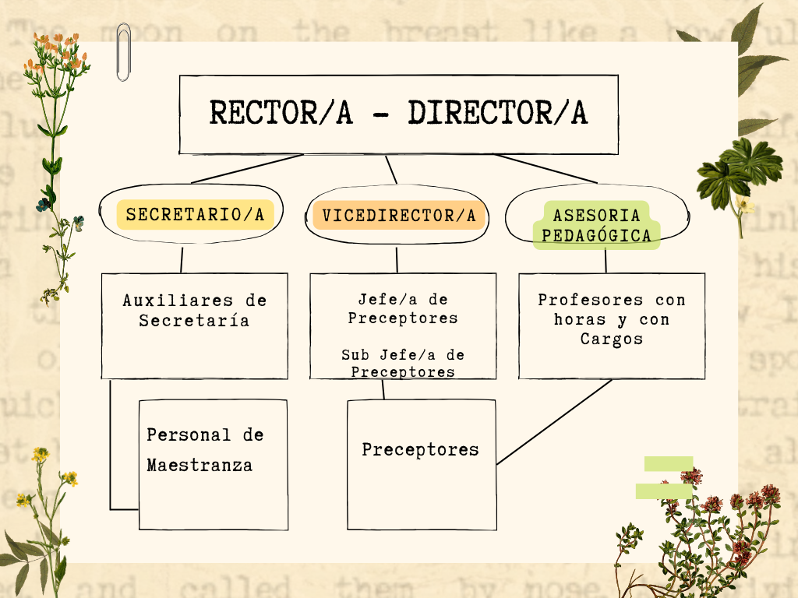
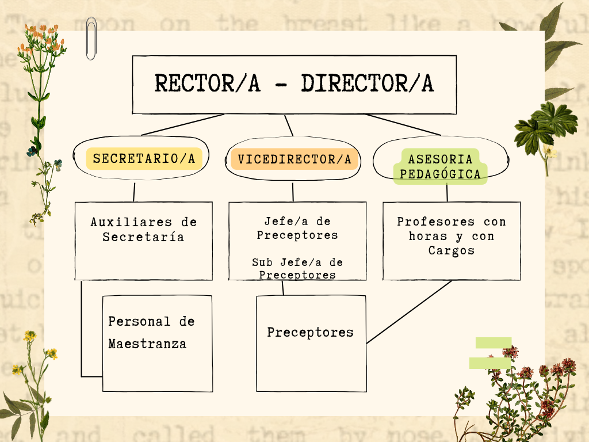

Aulas Heterogéneas
Rebeca Anijovich, experta en educación y pedagogía, ha abordado en sus trabajos la gestión de escuelas con aulas heterogéneas, donde se encuentran alumnos con diversas capacidades, intereses, estilos de aprendizaje y contextos culturales. Aquí algunos puntos claves de su reflexión sobre este tema:
Diversidad como Oportunidad: Anijovich ve la heterogeneidad no como un obstáculo, sino como una oportunidad para enriquecer el proceso educativo. La diversidad en el aula puede fomentar una mayor empatía, cooperación y un entendimiento más amplio del mundo entre los estudiantes.
Pedagogía Diferenciada: Propone una pedagogía diferenciada, donde el docente adapta la enseñanza a las necesidades, intereses y habilidades de cada estudiante. Esto puede implicar variar los métodos de enseñanza, el contenido, las actividades y las evaluaciones para asegurar que todos los estudiantes tengan la oportunidad de aprender y progresar.
Evaluación Formativa: Anijovich destaca la importancia de la evaluación formativa en aulas heterogéneas. Esta evaluación continua permite a los docentes obtener información sobre el progreso de cada alumno y ajustar la enseñanza en consecuencia. Además, fomenta una cultura de retroalimentación constante, donde los estudiantes pueden reflexionar sobre su propio aprendizaje y trabajar en sus áreas de mejora.
Trabajo Colaborativo: Fomenta el trabajo colaborativo entre estudiantes, aprovechando la diversidad del grupo. El aprendizaje cooperativo puede ayudar a los estudiantes a aprender unos de otros, desarrollando habilidades sociales y cognitivas importantes.
Formación Docente: Anijovich subraya la necesidad de una formación docente continua y especializada para manejar la diversidad en el aula. Los docentes deben estar preparados para implementar estrategias pedagógicas diferenciadas y para gestionar dinámicas de grupo complejas.
Inclusión: La inclusión es un valor central. Todas las estrategias y enfoques deben garantizar que cada estudiante se sienta valorado y tenga acceso a una educación de calidad. La inclusión va más allá de integrar a todos los estudiantes en el aula; se trata de asegurar que todos participen activamente y se beneficien del proceso educativo.
Contexto y Comunidad: La gestión de aulas heterogéneas también implica una comprensión profunda del contexto y la comunidad en la que se encuentra la escuela. Esto incluye trabajar con las familias y otros actores comunitarios para crear un entorno de apoyo integral para los estudiantes. Gestionar aulas heterogéneas según Rebeca Anijovich implica adoptar una visión inclusiva y diferenciada de la educación, donde se valora la diversidad y se adapta la enseñanza para atender las necesidades individuales de cada estudiante.
Todos Pueden Aprender
"Todos pueden aprender" es un libro de Rebeca Anijovich que aborda la diversidad en el aula y las estrategias para promover el aprendizaje inclusivo y equitativo. A continuación, se presenta un resumen de los puntos clave de esta obra:
Principio de Inclusión: Anijovich sostiene que todos los estudiantes, independientemente de sus capacidades, estilos de aprendizaje y contextos socioculturales, tienen el potencial de aprender. La inclusión es un principio fundamental en la educación que debe guiar la práctica docente.
Enfoque en la Diversidad: El libro destaca la importancia de reconocer y valorar la diversidad en el aula. Los docentes deben ser conscientes de las diferencias individuales entre los estudiantes y utilizar esas diferencias como recursos para el aprendizaje colectivo.
Pedagogía Diferenciada: Anijovich propone una pedagogía diferenciada, que implica ajustar la enseñanza para responder a las necesidades, intereses y habilidades de cada estudiante. Esto puede incluir variaciones en los métodos de enseñanza, los materiales, el ritmo de aprendizaje y las formas de evaluación.
Evaluación Formativa: La autora enfatiza la importancia de la evaluación formativa, que se centra en el seguimiento continuo del progreso de los estudiantes. Esta evaluación permite a los docentes ajustar sus estrategias de enseñanza en función de las necesidades emergentes de los alumnos.
Planificación Flexible: El libro subraya la necesidad de una planificación flexible que permita a los docentes adaptar sus planes de enseñanza sobre la marcha. Esto requiere una mentalidad abierta y la capacidad de responder a las dinámicas cambiantes del aula.
Ambiente de Aprendizaje Positivo: Crear un ambiente de aprendizaje positivo y de apoyo es esencial. Anijovich destaca la importancia de construir relaciones de confianza y respeto entre los estudiantes y el docente, y de fomentar una cultura de colaboración y apoyo mutuo.
Desarrollo Profesional Docente: Anijovich argumenta que para implementar efectivamente una educación inclusiva, los docentes deben participar en un desarrollo profesional continuo. Esto incluye la formación en estrategias pedagógicas diferenciadas y en la gestión de la diversidad en el aula.
Colaboración y Comunidad: El libro también aborda la importancia de la colaboración entre docentes, familias y la comunidad en general. La educación inclusiva es un esfuerzo colectivo que requiere el apoyo y la participación de todos los actores involucrados en la vida del estudiante. Todos pueden aprender" de Rebeca Anijovich es una guía para docentes sobre cómo gestionar la diversidad en el aula mediante una enseñanza inclusiva y diferenciada. El libro ofrece estrategias prácticas y teóricas para garantizar que todos los estudiantes tengan la oportunidad de aprender y desarrollarse plenamente.
La escuela como organización inteligente
"La escuela como organización inteligente", propone que las escuelas deben transformarse en organizaciones que aprenden y se adaptan continuamente para enfrentar los retos del siglo XXI. La autora introduce el concepto de "organización inteligente", destacando la importancia de la flexibilidad, la innovación y la capacidad de respuesta a los cambios sociales y educativos.
Aguerrondo resalta el aprendizaje organizacional, donde no solo los individuos, sino la institución en su conjunto, deben aprender y evolucionar. Esto requiere fomentar una cultura de colaboración, reflexión y mejora continua. La autora también enfatiza la necesidad de un liderazgo transformacional, con líderes visionarios que inspiren y guíen a su equipo en el proceso de cambio.
La cultura organizacional es otro aspecto crucial. Para ser una organización inteligente, una escuela debe cultivar valores como la confianza, la apertura al cambio y el compromiso con el aprendizaje continuo. La gestión del conocimiento es esencial, implicando sistemas que faciliten la creación, el intercambio y la aplicación del conocimiento, utilizando tecnologías de la información y redes de aprendizaje.
La innovación pedagógica es fundamental, promoviendo el pensamiento crítico, la creatividad y el aprendizaje activo. Aguerrondo también subraya la importancia de la evaluación y reflexión continuas para el aprendizaje organizacional, sugiriendo mecanismos integrales de evaluación y planificación de mejoras.
La capacidad de adaptación al entorno es vital para las escuelas, que deben estar atentas a las tendencias educativas, tecnológicas y sociales, y ser proactivas en la incorporación de cambios. Finalmente, el trabajo en red dentro de la escuela y con otras instituciones facilita el intercambio de conocimientos, recursos y experiencias, potenciando el aprendizaje y la innovación. Aguerrondo ofrece una guía para que las escuelas se conviertan en organizaciones capaces de aprender y adaptarse continuamente, promoviendo una cultura de colaboración, innovación y mejora constante en el ámbito educativo.
Conduciendo la Escuela
"Conduciendo la escuela" de Inés Aguerrondo es una guía sobre liderazgo y gestión educativa, enfocada en dirigir una escuela de manera efectiva y adaptada a los retos del siglo XXI. Aquí se resumen los puntos clave del libro:
Liderazgo Transformacional: Aguerrondo resalta la importancia de líderes educativos visionarios que inspiren y motiven a su equipo, y guíen a la escuela hacia el cambio y la innovación.
Visión y Misión Claras: El libro subraya la necesidad de una visión y misión claras que orienten todas las acciones y decisiones, enfocándose en el desarrollo integral de los estudiantes y la mejora continua de la calidad educativa.
Gestión Participativa: Aguerrondo aboga por una gestión participativa donde docentes, estudiantes y familias participen activamente en la toma de decisiones y la implementación de políticas escolares.
Innovación y Cambio: La autora resalta la necesidad de ser flexibles y abiertos a nuevas ideas y prácticas que mejoren el proceso educativo y respondan a las necesidades cambiantes de la sociedad.
Evaluación Continua: La evaluación continua es esencial para la mejora escolar, permitiendo medir el progreso, identificar áreas de mejora y ajustar estrategias en consecuencia.
Desarrollo Profesional: El desarrollo profesional continuo de docentes y líderes escolares es crucial para mantener un alto nivel de competencia y eficacia en la enseñanza y gestión educativa.
Cultura Organizacional: Aguerrondo insiste en crear una cultura organizacional positiva basada en la confianza, colaboración, respeto y compromiso con el aprendizaje y desarrollo de todos los miembros de la comunidad escolar.
Comunicación Efectiva: Establecer canales de comunicación claros y abiertos es fundamental para facilitar el intercambio de información y la colaboración dentro de la escuela y con la comunidad externa.
Trabajo en Equipo: El trabajo en equipo es clave para lograr los objetivos educativos, fomentando la colaboración y el trabajo conjunto entre docentes, estudiantes y familias para crear un ambiente de apoyo y crecimiento mutuo.
Sostenibilidad y Recursos: Aguerrondo aborda la gestión eficiente de recursos humanos y materiales, y la búsqueda de formas de asegurar la sostenibilidad a largo plazo de la escuela.
"Conduciendo la escuela" ofrece una guía comprensiva para líderes educativos sobre cómo gestionar una escuela de manera efectiva y adaptada a los desafíos modernos, destacando la importancia del liderazgo transformacional, la participación de la comunidad educativa, la innovación, la evaluación continua, y la creación de una cultura organizacional positiva y colaborativa.
Integración Curricular de TIC Conceptos y Modelos
"Integración Curricular de TIC: Conceptos y Modelos" explora cómo incorporar las Tecnologías de la Información y la Comunicación (TIC) en el currículo educativo para mejorar la calidad del aprendizaje y desarrollar competencias digitales en los estudiantes. A continuación, se presentan los puntos clave del libro:
Importancia de las TIC en la Educación: El libro destaca la relevancia de integrar las TIC en la educación para mejorar el aprendizaje, facilitar el acceso a información y recursos, y desarrollar competencias digitales.
Conceptos Clave: Se explican los conceptos fundamentales relacionados con las TIC en educación, como alfabetización digital, competencias digitales y e-learning.
Modelos de Integración: El libro describe varios modelos de integración de las TIC en el currículo, incluyendo:
Modelo de Sustitución: Uso de TIC para reemplazar herramientas tradicionales sin cambiar la metodología.
Modelo de Mejora: Uso de TIC para mejorar prácticas educativas existentes.
Modelo de Transformación: Uso de TIC para rediseñar prácticas educativas, creando nuevas formas de enseñar y aprender.
Enfoque Pedagógico: Se subraya la necesidad de un enfoque pedagógico centrado en el estudiante, utilizando las TIC para facilitar un aprendizaje activo, colaborativo y personalizado.
Desarrollo Profesional de los Docentes: El libro enfatiza la formación continua y el desarrollo profesional de los docentes para integrar efectivamente las TIC en su práctica pedagógica, sugiriendo programas de capacitación y estrategias de apoyo.
Diseño Curricular: Se ofrecen pautas para diseñar un currículo que incorpore las TIC de manera efectiva, incluyendo la planificación de actividades, selección de recursos digitales y creación de evaluaciones que aprovechen las TIC.
Infraestructura y Recursos: Se aborda la necesidad de una infraestructura adecuada para la integración de las TIC, incluyendo acceso a dispositivos, conectividad a internet y soporte técnico.
Evaluación y Monitoreo: El libro destaca la importancia de evaluar y monitorear el impacto de la integración de las TIC en el aprendizaje y la práctica educativa, proponiendo indicadores y métodos de evaluación.
Retos y Oportunidades: Se analizan los desafíos y oportunidades asociados con la integración de las TIC en el currículo, incluyendo cuestiones de equidad, acceso y sostenibilidad.
Casos de Estudio: Se presentan ejemplos prácticos de instituciones educativas que han integrado exitosamente las TIC en su currículo, ofreciendo lecciones aprendidas y mejores prácticas. El libro proporciona una guía completa sobre cómo integrar las TIC en el currículo educativo, destacando su importancia, ofreciendo modelos y estrategias prácticas, y abordando los desafíos y oportunidades de esta integración.
Enseñar y aprender con TIC: nuevos espacios, otros tiempos
"Enseñar y aprender con TIC: nuevos espacios, otros tiempos" examina cómo las Tecnologías de la Información y la Comunicación (TIC) están transformando la educación, ampliando los espacios y tiempos de enseñanza y aprendizaje. Aquí se presentan los puntos clave del libro:
Transformación de la Educación: Las TIC están revolucionando la educación, permitiendo nuevas formas de enseñanza y aprendizaje que van más allá de las aulas tradicionales y los horarios fijos.
Nuevos Espacios de Aprendizaje: Se exploran entornos virtuales, plataformas de e-learning y comunidades de aprendizaje en línea, permitiendo a los estudiantes acceder a información y recursos desde cualquier lugar y en cualquier momento.
Flexibilidad Temporal: Las TIC introducen mayor flexibilidad temporal, permitiendo a los estudiantes aprender a su propio ritmo y en horarios adaptados a sus necesidades, en contraste con el modelo tradicional de clases sincrónicas.
Aprendizaje Personalizado: Facilitan un aprendizaje personalizado, adaptando contenidos y actividades a los intereses, habilidades y ritmos de cada estudiante mediante software educativo, plataformas adaptativas y recursos interactivos.
Colaboración y Redes de Aprendizaje: Enfatizan la importancia de la colaboración y las redes de aprendizaje que las TIC hacen posibles, permitiendo a los estudiantes trabajar juntos, compartir conocimientos y apoyarse mutuamente a través de herramientas digitales.
Rol del Docente: Se analiza cómo cambia el rol del docente en un entorno mediado por TIC, pasando de transmisor de conocimiento a facilitador del aprendizaje, guiando y apoyando a los estudiantes en su proceso de aprendizaje autónomo y colaborativo.
Competencias Digitales: Subrayan la necesidad de desarrollar competencias digitales tanto en estudiantes como en docentes, incluyendo habilidades para usar tecnologías, gestionar información, comunicarse en entornos digitales y resolver problemas técnicos.
Desafíos y Consideraciones: Abordan los desafíos de integrar las TIC en la educación, como acceso y equidad, infraestructura adecuada, resistencia al cambio y la importancia de la formación continua para docentes.
Evaluación y Calidad Educativa: Discuten nuevas formas de evaluación que permiten las TIC, como evaluaciones en línea, uso de analíticas de aprendizaje y evaluación continua y formativa, y cómo pueden contribuir a mejorar la calidad educativa.
Experiencias y Casos Prácticos: Presentan casos prácticos de instituciones que han implementado con éxito las TIC, ilustrando diversas formas en que pueden enriquecer la educación y ofreciendo lecciones valiosas para otros educadores.
Aprendizaje ubicuo Bill Cope y Mary Kalantzis
"Aprendizaje ubicuo" de Bill Cope y Mary Kalantzis explora cómo las tecnologías digitales facilitan un aprendizaje sin restricciones de tiempo y espacio. A continuación, se presentan los puntos clave del libro:
Definición de Aprendizaje Ubicuo: Es el aprendizaje que puede ocurrir en cualquier momento y lugar, gracias a la constante disponibilidad de tecnologías digitales, rompiendo las barreras tradicionales de tiempo y espacio en la educación.
Tecnologías Digitales: Las tecnologías digitales son fundamentales en el aprendizaje ubicuo. Dispositivos móviles, internet, plataformas de aprendizaje en línea y aplicaciones educativas permiten el acceso continuo a información, recursos y actividades educativas.
Características del Aprendizaje Ubicuo:
Accesibilidad: Recursos educativos disponibles desde cualquier dispositivo con internet.
Flexibilidad: Adaptación del aprendizaje a los horarios y ritmos individuales.
Personalización: Contenidos y actividades personalizados según las necesidades e intereses de cada estudiante.
Interactividad: Mayor interacción entre estudiantes y con los docentes, facilitando la colaboración y el feedback.
Entornos de Aprendizaje:
Diversos entornos de aprendizaje ubicuo incluyen aulas físicas con tecnología, espacios virtuales y escenarios mixtos que combinan lo físico y lo digital.
Cambio en el Rol del Docente:
Los docentes se transforman de transmisores de conocimiento a facilitadores y guías, apoyando a los estudiantes en el uso de recursos digitales y en la gestión de su propio aprendizaje.
Competencias para el Aprendizaje Ubicuo:
Se destacan las competencias necesarias para aprovechar el aprendizaje ubicuo: habilidades tecnológicas, autoaprendizaje, colaboración en línea y gestión de información digital.
Ventajas del Aprendizaje Ubicuo:
Acceso a una amplia gama de recursos educativos.
Aprendizaje continuo y a lo largo de la vida.
Desarrollo de competencias digitales esenciales.
Mayor motivación y compromiso de los estudiantes.
Desafíos del Aprendizaje Ubicuo:
Desigualdad en el acceso a la tecnología.
Necesidad de formación continua para docentes.
Importancia de una infraestructura adecuada.
Evaluación en el Aprendizaje Ubicuo:
Nuevas formas de evaluación adecuadas para el aprendizaje ubicuo, como evaluaciones en línea, analíticas de aprendizaje y evaluación continua y formativa a través de plataformas digitales.
Casos de Estudio y Ejemplos Prácticos:
El libro presenta casos de estudio y ejemplos de implementación exitosa del aprendizaje ubicuo en diversas instituciones educativas, proporcionando mejores prácticas y estrategias efectivas.
"Aprendizaje ubicuo" ofrece una visión comprensiva de cómo las tecnologías digitales transforman la educación, permitiendo un aprendizaje más accesible, flexible y personalizado, y proporciona una guía práctica para su integración efectiva.
El Aprendizaje ubicuo y el futuro de la enseñanza.
"El Aprendizaje Ubicuo y el Futuro de la Enseñanza" explora cómo el aprendizaje ubicuo, facilitado por tecnologías digitales, transforma la educación y modela el futuro de la enseñanza. Aquí se resumen los puntos clave del libro:
Definición de Aprendizaje Ubicuo: Se define como el aprendizaje que puede ocurrir en cualquier momento y lugar, aprovechando la tecnología para proporcionar acceso continuo a recursos educativos y actividades de aprendizaje.
Características del Aprendizaje Ubicuo:
Accesibilidad: Acceso a contenidos educativos desde múltiples dispositivos y plataformas con conexión a internet.
Personalización: Adaptación del contenido y las actividades educativas a las necesidades individuales de cada estudiante.
Interactividad y Colaboración: Facilita la interacción y colaboración entre estudiantes y docentes a través de herramientas digitales.
Flexibilidad Temporal: Permite a los estudiantes aprender a su propio ritmo y en horarios que se ajusten a sus necesidades y preferencias.
Impacto en la Enseñanza: El rol de los docentes cambia de transmisores de conocimiento a facilitadores y guías del aprendizaje, adaptándose a nuevas metodologías y utilizando tecnologías para enriquecer el aprendizaje.
Competencias Digitales: Es fundamental desarrollar competencias digitales en estudiantes y docentes, incluyendo la capacidad de utilizar tecnologías digitales, gestionar información, colaborar en línea y resolver problemas técnicos.
Nuevas Formas de Evaluación: Se requieren nuevos enfoques de evaluación, como evaluaciones en línea, analíticas de aprendizaje y evaluaciones formativas continuas adaptadas al aprendizaje digital.
Desafíos y Consideraciones:
Desigualdad en el Acceso: Desafío de garantizar que todos los estudiantes tengan acceso a los recursos digitales necesarios.
Formación Docente: Necesidad de capacitación y desarrollo profesional continuo para que los docentes puedan integrar eficazmente las tecnologías en sus prácticas educativas.
Infraestructura Adecuada: Importancia de contar con una infraestructura tecnológica adecuada que soporte el aprendizaje ubicuo, incluyendo conectividad a internet, dispositivos y soporte técnico.
Futuro de la Enseñanza: Se anticipa un entorno educativo más flexible, personalizado y centrado en el estudiante, donde la tecnología juega un papel central en la facilitación del aprendizaje.
Casos de Estudio y Ejemplos Prácticos: Ejemplos y casos de estudio de instituciones educativas que han implementado con éxito el aprendizaje ubicuo, proporcionando lecciones aprendidas y mejores prácticas para guiar a otros educadores en esta transición.
Competencias Digitales
Las competencias digitales son un conjunto de habilidades, conocimientos y actitudes necesarias para utilizar de manera efectiva las tecnologías de la información y la comunicación (TIC). Estas competencias son esenciales tanto en el ámbito educativo como en el laboral y personal. A continuación, se presenta una síntesis de las competencias digitales:
Alfabetización en Información y Datos:
Búsqueda y Evaluación de Información: Capacidad para buscar, localizar, evaluar y gestionar información en línea de manera efectiva y crítica.
Gestión de Datos: Habilidad para organizar, almacenar y recuperar datos digitales de manera eficiente.
Comunicación y Colaboración Digital:
Comunicación en Entornos Digitales: Uso de herramientas y plataformas digitales para comunicarse, compartir información e interactuar con otros.
Colaboración en Línea: Capacidad para trabajar de manera colaborativa en entornos digitales, utilizando herramientas de colaboración y redes sociales.
Creación de Contenidos Digitales:
Producción de Contenidos Digitales: Habilidad para crear, editar y publicar contenido digital, incluyendo textos, imágenes, videos y presentaciones.
Programación y Desarrollo: Conocimientos básicos de programación y desarrollo de aplicaciones y sitios web.
Seguridad Digital:
Protección de Datos Personales: Conocimiento de las prácticas y herramientas para proteger la privacidad y los datos personales en línea.
Seguridad en Línea: Habilidad para identificar y prevenir amenazas digitales como virus, malware, phishing y otros ataques cibernéticos.
Resolución de Problemas:
Solución de Problemas Técnicos: Capacidad para identificar y solucionar problemas técnicos básicos relacionados con el uso de dispositivos y aplicaciones digitales.
Innovación y Creatividad: Uso de las tecnologías digitales para desarrollar soluciones innovadoras y creativas a problemas complejos.
Alfabetización Mediática:
Consumo Crítico de Medios: Capacidad para analizar y evaluar críticamente el contenido mediático y su impacto.
Producción Responsable de Medios: Habilidad para crear y compartir contenido mediático de manera ética y responsable.
Aprendizaje Continuo y Desarrollo Profesional:
Autoaprendizaje: Capacidad para utilizar las TIC para la autoformación y el aprendizaje a lo largo de la vida.
Actualización Profesional: Uso de herramientas y recursos digitales para mantenerse actualizado en el ámbito profesional y mejorar continuamente las competencias.
Ciudadanía Digital:
Participación en la Sociedad Digital: Participación activa y responsable en comunidades y redes digitales.
Conocimiento de Derechos y Responsabilidades: Comprensión de los derechos y responsabilidades en el uso de las TIC, incluyendo aspectos legales y éticos.


 
